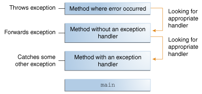

Lección: Excepciones
¿Qué es una Excepción?
El término excepción es la abreviatura de la frase "evento excepcional".
Definición: Una excepción es un evento, el cual ocurre durante la ejecución de un programa, que interrumpe el flujo normal de las instrucciones del programa.
Cuando un error ocurre dentro de un método, el método crea un objeto y lo deja en manos del sistema de ejecución. El objeto, llamado un objeto excepción, contiene información sobre el error, incluyendo su tipo y el estado del programa cuando el error ocurrió. Crear un objeto excepción y enviárselo al sistema de ejecución se llama lanzar una excepción.
Después de que un método lanze una excepción, el sistema de tiempo de ejecución intenta encontrar algo para manejarlo. El conjunto de posibles "cosas" para manejar la excepción es la lista ordenada de métodos que han sido llamados hasta llegar al método donde el error ocurrió. La lista de métodos es conocida como la pila de llamadas (vea la siguiente figura).

La pila de llamadas.
El sistema de tiempo de ejecución busca en la pila de llamadas por un método que contenga un bloque de código que pueda manejar la excepción. Este bloque de código es llamado manejador de la excepción. La búsqueda empieza con el método en el cual el error ocurrió y procede a recorrer la pila de llamadas en el orden inverso en el cual los métodos fueron llamados. Cuando un manejador apropiado se encuentra, el sistema de tiempo de ejecución pasa la excepción al manejador. Un manejador de excepción es considerado apropiado si el tipo del objeto excepción lanzado coincide con el tipo que puede ser manejado por el manejador.
El manejador de excepciones elegido se dice que captura la excepción. Si el sistema de tiempo de ejecución busca exhaustivamente todos los métodos en la pila de llamadas sin encontrar un manejador de excepciones apropiado, como se muestra en la siguiente figura, el sistema de tiempo de ejecución (y, consecuentemente, el programa) termina.

Buscando en la pila de llamadas por el manejador de la excepción.
Usar excepciones para gestionar errores tiene algunas ventajas sobre las técnicas tradicionales de gestión de errores. Puede aprender más en la sección Ventajas de las Excepciones.